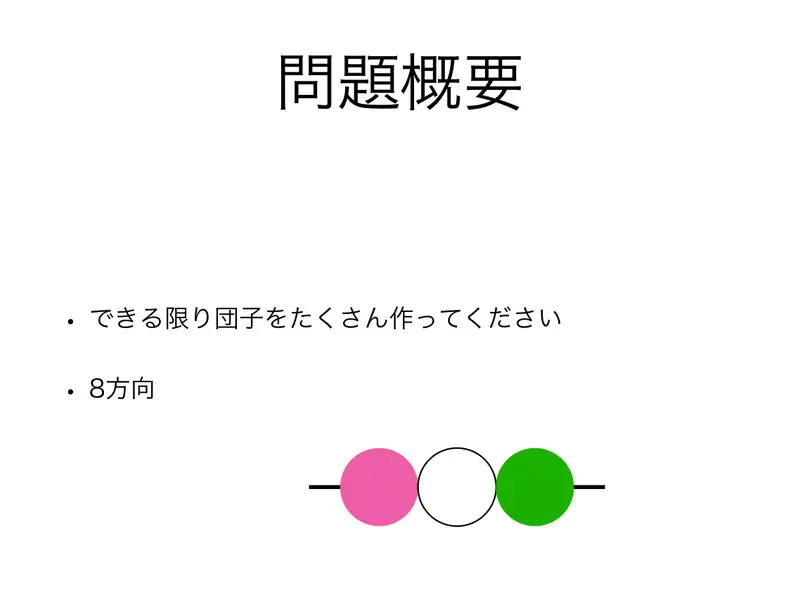
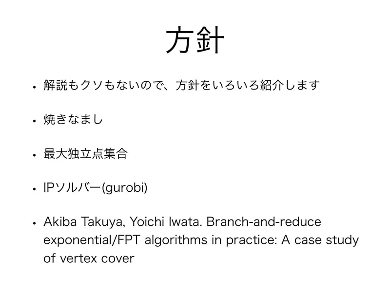
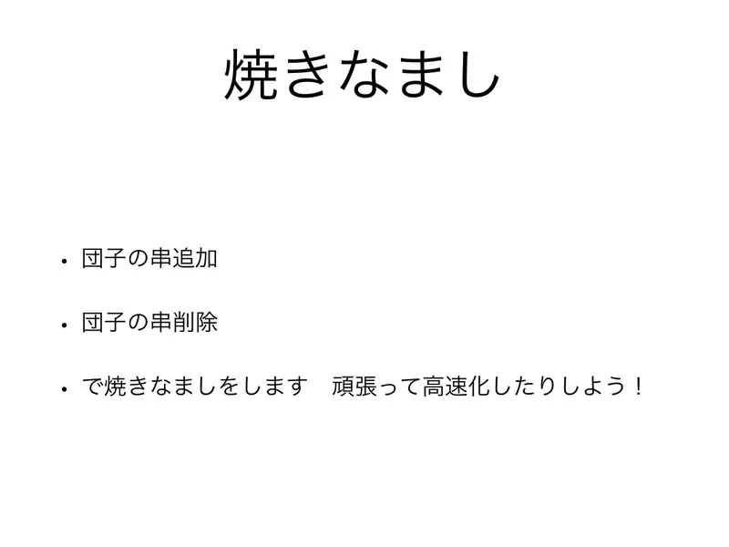
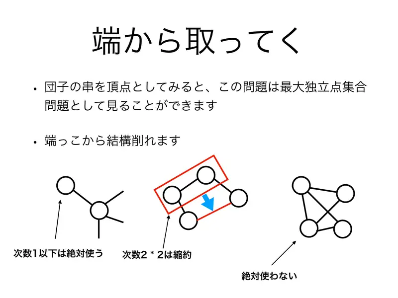
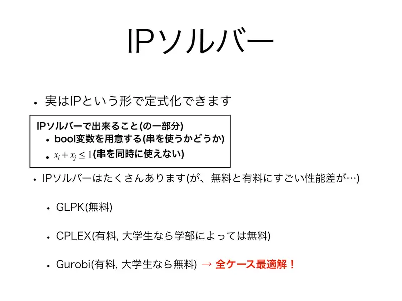
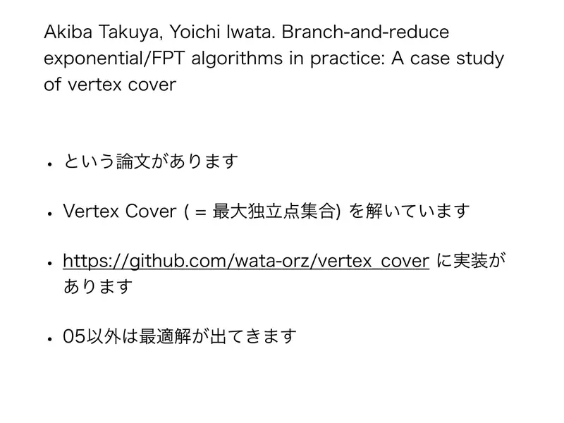

Analiza rješenja · JOI Spring Camp 2020 · Dan 4
Legendarni majstor danga
O ovom članku
Tekst je prijevod službene japanske prezentacije rješenja, preoblikovan u članak. Slajdovi su ugrađeni kao slike; natpis pod svakim slajdom je prijevod teksta na njemu. Dijelovi označeni kao trenerska napomena nisu u izvornoj prezentaciji — dodani su da popune korake koje slajdovi preskaču ili samo skiciraju.
Slajdovi
Sažetak i popis pristupa
izvorni slajdovi 1–3
-
1Naslovni slajd: LGM — Legendary danGo Maker. -

2Sažetak. Napravi što više štapića danga; smjerovi: 8 (4 linije, oba redoslijeda nabadanja). -

3„Prave” analize nema — pregled pristupa: simulirano kaljenje; maksimalni nezavisni skup; IP rješavač (Gurobi); Akiba–Iwata, Branch-and-reduce exponential/FPT algorithms in practice: a case study of vertex cover.
← → tipke ili klik na sliku
Koraci algoritma
Pristupi
izvorni slajdovi 4–7
-

4Kaljenje. Potezi: dodaj štapić / ukloni štapić. Potrudi se oko brzine. -

5Skidanje s ruba. Štapići kao vrhovi → maksimalni nezavisni skup. S rubova se puno toga ukloni: stupanj $\le 1$ uvijek uzmi; „2 × stupanj 2” sažmi; neke vrhove sigurno ne koristi. -

6IP rješavač. Formulacija: bool varijabla po štapiću; $x_i + x_j \le 1$ za sukobe. Rješavača je mnogo (GLPK besplatan; CPLEX i Gurobi plaćeni, studentima besplatni). Gurobi: optimum u svim slučajevima! -

7Akiba–Iwata. Rad rješava vertex cover (= maksimalni nezavisni skup); implementacija na GitHubu. Optimum za sve slučajeve osim 05.
← → tipke ili klik na sliku
Sažetak
- Štapići = vrhovi, sukobi = bridovi; maksimalni nezavisni skup na rijetkom grafu.
- Sigurne redukcije s ruba + simulirano kaljenje daju pune bodove; IP rješavač ili branch-and-reduce daju dokazani optimum.
- Uvijek napiši vlastiti checker izlaza.